Welcome to FISAT NCC UNIT
The National Cadet Corps (NCC) is a youth development movement. It has enormous potential for nation building. The NCC provides opportunities to the youth of the country for their all-round development with a sense of Duty and Discipline, Commitment, Dedication, and Moral Values so that they become able leaders and useful citizens.
The NCC provides exposure to the cadets in a wide range of activities., with a distinct emphasis on Social Services, Discipline and Adventure Training. It has emerged as the biggest uniformed youth organization of the country symbolizing its motto Unity and Discipline.
DG’s four Cardinal Principals of Discipline
- Obey with a smile
- Be Punctual
- Work hard and without fuss
- Make no excuses and tell no lies
NCC of FISAT started in May 2022 is been attached to 22 Bn-KERALA REGIMENT NCC and has total strength of 52 which includes girl cadets.
Parades will be conducted on Saturdays and general holidays in the morning from 7:00 am, not disturbing the academics of the students.
During the parade time various activities like drill , weapon training and theory classes on military subjects will be conducted to the cadets.
NCC fosters the overall development of each of its cadet in every field one can name-be it sports, academics, cultural activities or adventure activities. NCC make an indelible mark in all of it.
National Cadet Corps @ FISAT |
|
|---|---|
| 22 [K] Bn | |
| Ernakulam Group | |
| Kerala & LakshwaDweep Directorate | |
Explore our activities, achievements, and events of 2023-24.
Events
FISAT Hosts Successful Combined Annual Training Camp (CATC) 2024

The Federal Institute of Science and Technology (FISAT), Hormis Nagar, Mookkannoor, Angamaly, successfully hosted the Combined Annual Training Camp (CATC) 2024 from May 10th to May 19th. The ten-day camp aimed at enhancing the skills of cadets in areas such as mock drills, leadership, personality development, health management, basic survival techniques, and teamwork. Approximately 650 cadets from over 50 institutions participated, with the camp well-equipped to ensure smooth operations. Training activities included drills, rifle training, shooting, tent pitching, and map reading, alongside theoretical classes on NCC subjects. Each day began with morning physical training, stretching, yoga, and meditation, complemented by races and endurance exercises to boost both physical and mental well-being. On May 17th, Commodore Simon Mathai, Ernakulam Group Commander, visited the FISAT campus to interact with the cadets, offering insights and encouragement. Discipline was rigorously maintained throughout the camp, reflecting the commitment of both cadets and organizers. Evenings were vibrant with cultural performances, including dance and drama, adding a touch of entertainment to the rigorous schedule. The CATC 2024 at FISAT was a resounding success, providing invaluable training and experiences that will benefit the cadets in their future endeavors.
FISAT NCC Cadets Excel in 'B-Certificate' Examination
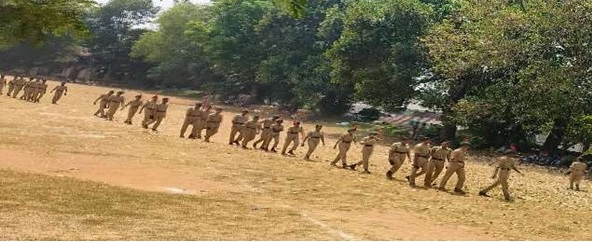The first batch of 23 NCC cadets from FISAT successfully completed the prestigious ‘B-Certificate’ examination at Sree Sankara College, Kalady, on February 10th and 11th, 2024. The two-day examination, vital for cadets aiming to advance in the NCC, featured both practical and theoretical assessments. The practical session included weapon training, map reading, and a drill test, while the theory session covered topics like NCC history, defense services, and national integration. The event, supervised by PI staff and ANOs, highlighted the cadets' dedication and was guided by Lt. Dr. Prasad J. C.
Invited Talk by Col.H Padmanabhan
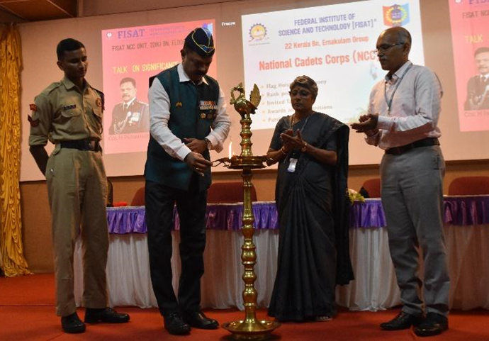Col.H Padmanabhan retired NCC commanding officer of 22 K Bn, with a wealth of experience in training and motivating young people interacted with FISAT students on 27th November 2023 in the seminar with first year and second year B.Tech students of FISAT. He shared his insights on the importance of youths and NCC in shaping the future of India.
'Swachhata Hi Seva' Campaign
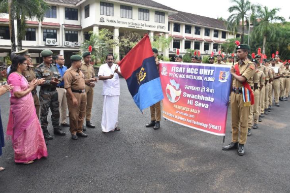On the occasion of Gandhi Jayanthi Week Celebration program ‘to clean the village’ ,FISAT NCC unit organized a 'Swachhata Hi Seva' Campaign Awareness Rally. The rally was flagged off by Mookkannoor Panchayath president Sri.Biju Palatty. The rally started from the FISAT campus and passed through the nearby places, spreading awareness about the importance of cleanliness and hygiene. The participants of the rally chanted slogans and carried placards with messages such as "Cleanliness is next to godliness," "Swachh Bharat Abhiyan," etc.
'The Floral Tribute to Mahatma Gandhiji

The Floral Tribute to Gandji was a cultural event held on the occasion of Mahatma Gandhi's 153rd birth anniversary at the FISAT campus in the presence of students and faculty members. The event featured songs on the life and teachings of Mahatma Gandhi. Mookkannor Panchayath President Sri. Biju Palatty, spoke about the importance of following Gandhi's ideals of cleanliness, non-violence, and truth.
CPR and AED Training in Memory of Abhiram
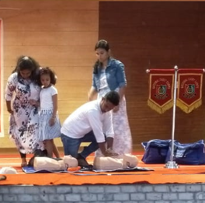On October 13, 2023, the NCC unit of FISAT organized a crucial awareness session on Cardiopulmonary Resuscitation (CPR) and Automated External Defibrillator (AED) operation, responding to the recent passing of Abhiram from the S1 Mechanical department. The training, aimed at first-year B.Tech students, was expertly conducted by Anish Isaac, an American Heart Association instructor known for his life-saving expertise. The event, a collaborative effort between junior and senior NCC cadets, sought to equip students with essential skills to handle medical emergencies. By learning CPR and AED operation, attendees were empowered to assist in critical situations and potentially save lives. Instagram Link
Rank Promotion
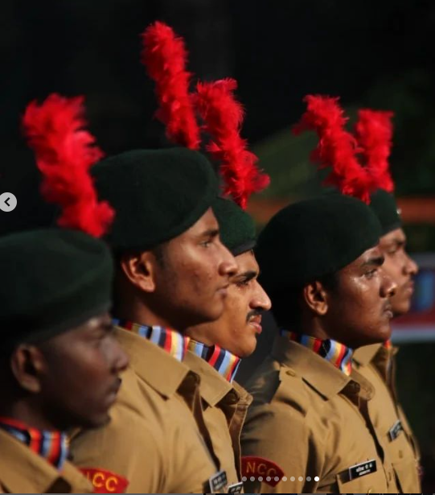Based on the performance in various activities, parade and test and interview, the Lance Corporals Lcpl.Arjun P Nair, Lcpl.Vyshnav Rajesh Nair and Lcpl.Shreyalakshmi Shankar were promoted to Corporal Rank and cadets Cdt. Ann Mary Benny, Cdt. Athulraj Appukuttan and Cdt. Ashikh P K were promoted to Lance Corporal Rank. Chairman Shimit P R awarded the ranks to promoted members.
NCC Cadets Assisted Angamaly Police
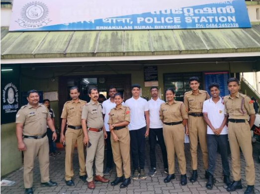On Sunday, the 15th of October 2023, a group of National Cadet Corps (NCC) cadets, responded to a request from the Circle Inspector to assist at the Angamaly police station. The purpose of this mission was to input data regarding out of-state workers into the police database. It served as a reminder of our duty to assist our community and collaborate with law enforcement agencies to ensure the safety and well-being of society.
Kanal Campaign on Women's and Child Development
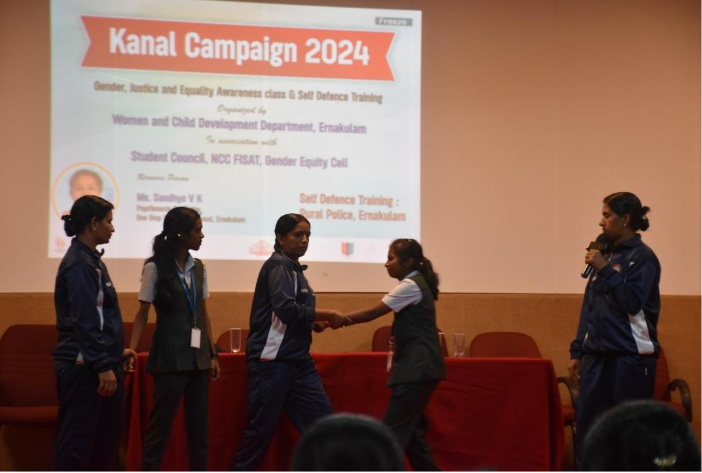In celebration of Women’s Day, FISAT held a Kanal Campaign focused on women and child development on March 11th, 2024, at the Main Seminar Hall. The event commenced with a prayer song, creating a contemplative atmosphere. Ms. Sandhya VK, a prominent psychosocial counselor from Kakkanad, Ernakulam, delivered an insightful session on women and child development, providing valuable perspectives. The Rural Police from Ernakulam followed with a live, interactive self-defense session, offering practical advice and demonstrations. The day concluded successfully, leaving participants empowered with knowledge and safety skills.
FISAT NCC Cadets Appointed as Special Police Officers During Indian Parliament Elections

In a move to ensure orderly polling during the Indian Parliament elections on April 26, 2024, 20 NCC cadets from FISAT Engineering College were appointed as Special Police Officers (SPOs). Tasked by the Election Commission, these cadets played a vital role in maintaining discipline and preventing violence at polling booths. After reporting to UC College, Aluva, on April 25th, the cadets received instructions from police officers and were deployed to various polling stations. Their presence contributed to a peaceful electoral process, showcasing the cadets' responsibility and the significant role of youth in national service.
NCC Cadets Launch Bharatham Stall at FISAT to Fund 'Amar Jawan' Statue
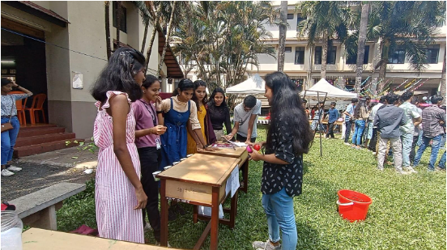On February 27th, 2024, FISAT’s NCC cadets launched the Bharatham Stall near the Passion Fruit Hut, aiming to raise funds for the construction of the ‘Amar Jawan’ statue. Under the guidance of Lt. Dr. Prasad J. C., both senior and junior cadets collaborated to create an engaging environment, featuring games like darts, "Try Your Luck," and "Bounce a Ball." The event attracted many participants, fostering fun and uncovering hidden talents. Running until 4:30 pm, the successful event highlighted the cadets' entrepreneurial spirit and dedication to honoring soldiers through the ‘Amar Jawan’ statue.
FISAT NCC Unit Bids Farewell to Esteemed Trainer Arjun Sir
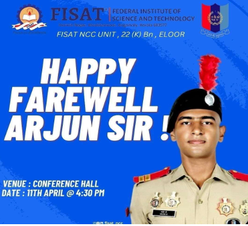On April 11th, the FISAT NCC unit gathered to bid a heartfelt farewell to their dedicated NCC trainer, Mr. Arjun. Renowned for his unwavering commitment to shaping the future of cadets, the ceremony honored his tireless efforts and passion for the National Cadet Corps. Cadets delivered moving speeches, celebrating Arjun Sir's instrumental role in developing their character, discipline, and leadership skills. Mementos were presented as tokens of appreciation, and a group photo captured the unity and gratitude of the entire unit. As Arjun Sir embarks on his next journey, his legacy will continue to inspire future cadets.
De-Addiction Counsellor Shibin Shaji Varghese Empowers NCC Cadets with Substance Abuse Awareness

On May 13, 2024, Shibin Shaji Varghese, a renowned De-Addiction Counsellor from DREAM Kochi, conducted an impactful session at the Federal Institute of Science and Technology (FISAT) to educate NCC cadets about substance abuse. The session, marked by enthusiastic participation, provided a deep dive into the dangers of addiction and preventive strategies. Varghese delivered a comprehensive discourse using interactive discussions, real-life examples, and informative presentations. His expert guidance and engaging approach left a significant impression on the cadets, equipping them with essential knowledge to combat substance abuse effectively.
Dr. Divya Thomas Delivers Insightful Personality Development Session to NCC Cadets
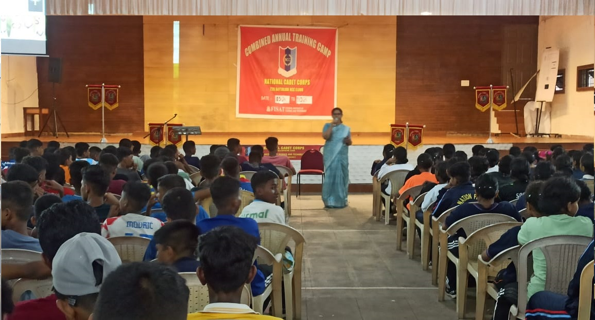On May 14, 2024, the Federal Institute of Science and Technology (FISAT) hosted a transformative personality development session led by Dr. Divya Thomas, a renowned Clinical Psychologist from Rajagiri Hospital, Aluva. Addressing NCC cadets, Dr. Thomas shared her extensive expertise in psychology and human behavior through engaging activities, introspective exercises, and thought-provoking discussions. Her session provided valuable insights into self-awareness, interpersonal skills, and emotional intelligence, empowering the cadets with practical wisdom to enhance their personal and professional growth. The dynamic and interactive approach left a lasting impact on the participants.
NCC Cadets Acquire Essential Disaster Management Skills from Fire & Rescue Experts
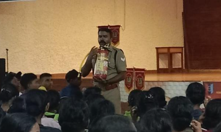On May 15, 2024, AFO Arjun and Sooraj from the Fire & Rescue Department at Angamaly Fire Station conducted a crucial session on "Disaster Management" for NCC cadets. The class aimed to impart vital knowledge and practical skills for effective disaster response. Leveraging their extensive field experience, AFO Arjun and Sooraj offered comprehensive insights into managing both natural and man-made disasters. Their expert guidance equipped the cadets with essential strategies and techniques, enhancing their preparedness and response capabilities in critical situations.
FISAT NCC Unit Celebrates Environment Day with Collective Enthusiasm

On June 5, 2024, the FISAT NCC Unit hosted a meaningful Environment Day celebration on campus, highlighting their commitment to ecological responsibility. The event, starting at 12:30 pm, saw active participation from the Principal, Chairman, Administrative Officer, ANO, teaching and non-teaching staff, and NCC cadets. This unified effort underscored the importance of collective action in tackling environmental issues. The celebration featured various activities designed to raise awareness and promote sustainable practices. The event emphasized the vital role everyone plays in environmental preservation and showcased FISAT’s dedication to a greener, more sustainable future.
International Yoga Day
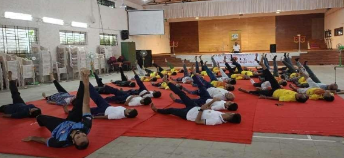On June 15, 2024, the NCC unit of the Federal Institute of Science and Technology (FISAT) hosted a special yoga class to celebrate International Yoga Day. Held in the institute's auditorium, the event aimed to enhance physical, mental, and spiritual well-being among students, staff, and the local community. Approximately 50 attendees, including NCC cadets, Mookkannur Development Committee members, and FISAT staff, participated actively. Lt. Dr. Prasad J.C., ANO of the FISAT NCC unit, opened the event with a speech on the significance of yoga. Experienced instructor Anil Kumar led the class through asanas, stretching, breathing techniques, and relaxation postures. ATMA foundation students Miss Sharanya and Miss Anupriya impressed with a yoga dance routine, while Parvati Ma'am from ATMA elaborated on yoga’s benefits and the foundation’s goals. Cpl. Shreyalakshmi Shankar delivered the vote of thanks, and the event garnered overwhelmingly positive feedback from participants.
Anti Narcotic Seminar
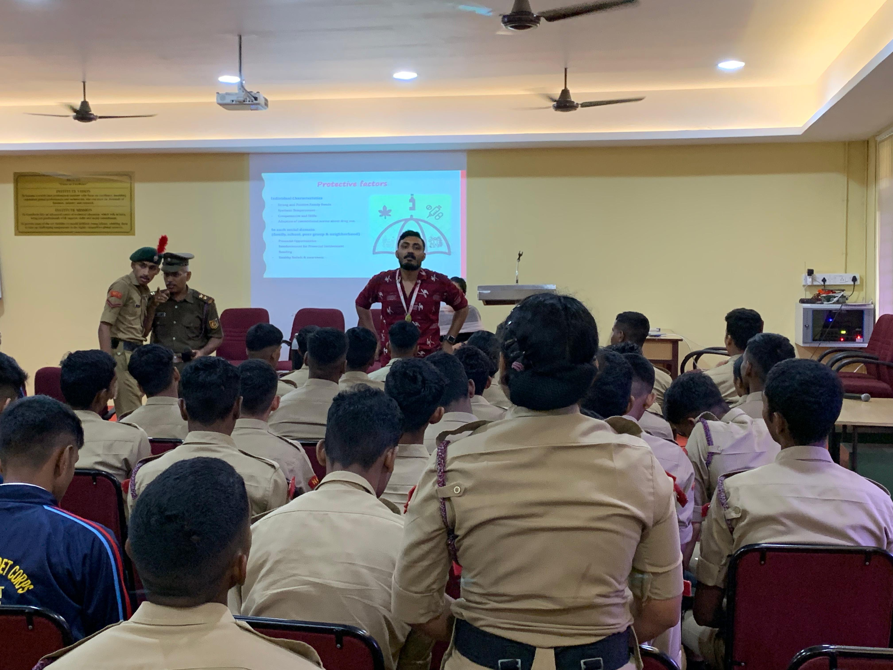A seminar on Anti Narcotic was conducted, led by DREAM district cordnator Shibin Shaji Varghese on 1st October 2023. Principal Dr.Mini P R, Major Narayanan, Lt.Dr.Prasad J C, Sub.Major Manoj ,Dr.C Sheela, Director R&D, Dr.Unnikartha, Dean, and Lcpl Vyshnave spoke on the occation.
Metro Water and Metro Train Journey with Kripa Sadan Old Age Home members.

As part of Social Service programme of NCC FISAT, Cadets conducted a Metro Water and Metro Train Journey with Kripa Sadan Old Age Home members on 25th Septemebr 2023. Team Visited Vytila Metro Station and Kakkanad Water metro Station and took dinner from one of the Best Restaurant of Angamaly. It was a great and unforgettable experience for each members of the team.
Cleaning Mookkannoor Town and Roads.
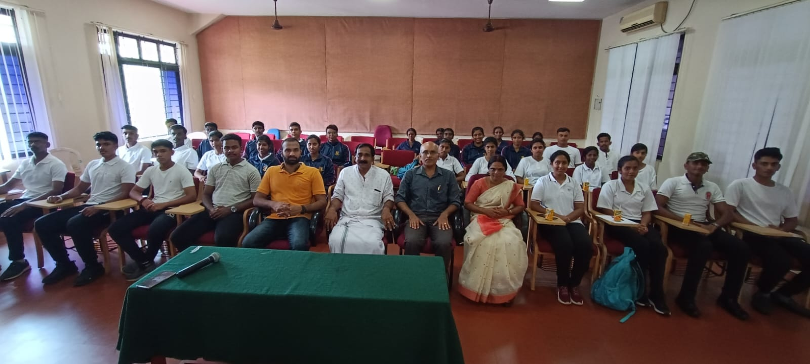NCC Cadets cleaned 5 Km road in association with Mookkannoor Grama panchayath as part of Gandhi Jayanthi Cleaning Week Awareness Programme. Many Public, school children, members of haritha karma Sena, etc participated in the cleaning programme. Panchayath President Biju Palatty and Vice President Jaya Radhakrishnan Congratulated and interacted FISAT NCC cadets and distributed refreshments on the same day.
District Level Quiz Competition Winners
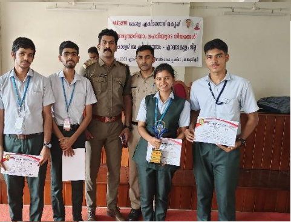NCC Cadets & NSS Volunteers of FISAT won 2nd and 4th prizes in District Level Quiz Competition organized by The Kerala Excise Department on 30-11-2023 at Ernakulam Zonal Office Complex, Kacheripady. Cdt. Vigneswar S Kumar(S1 ECE B) and NSS Volunteer Sooraj C R( S3 CSE C) won second position. Lcpl. Annmary Benny(S3 EIE) and NSS Volunteer Neeraj Suresh(S3 CSE C) got fourth position.
Orange the World Campaign Day
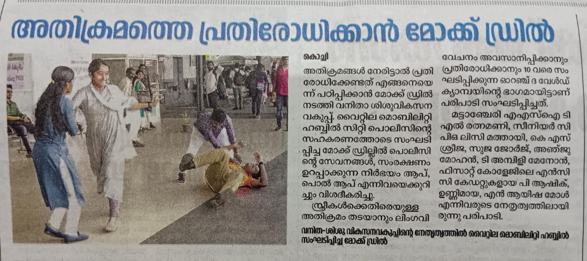On November 25, 2023, the Vyttila Hub became a focal point for the Orange the World Campaign, emphasizing the crucial involvement of men in combating violence against women. The event commenced at 11 am, with the active participation of the District level Women and Children's Welfare Committee, representatives from the Kerala Police and along with Fisat ncc cadets. The event featured a self defense technique for women . The Women and Children's Welfare Committee played a pivotal role in orchestrating the day's activities, fostering a supportive environment for dialogue. The presence of the Kerala Police underscored the commitment to ensuring the safety and well-being of women in the community. The Orange the World Campaign Day at Vyttila Hub served as a beacon of hope, inspiring positive change and reinforcing the importance of collaborative efforts in creating a safer and more inclusive society for all.
NCC Christmas Celebration
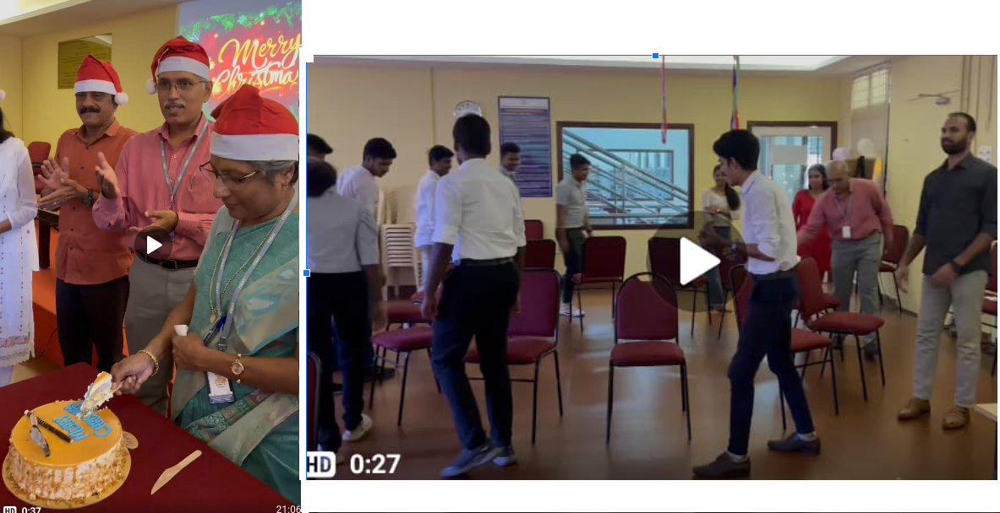Cultural Programmes, Games, and christmas meeting with games activities conducted on 22nd Dec 2023.
Best Coordinator ANO Award

Lt.Dr.Prasad J C lead Kerala NCC Team as 2IC Contingent Commander of 150 Cadets to Ahamadabad, Gujarat for the National Level Camp ‘Ek Bharath Sreshta Bharath’ Camp from 6th January to 22 January 2024. He received the Best coordinator award for Group Discussion, Speech and Essay Writing Competion during the NIC camp
Best Shooter Award from Bn
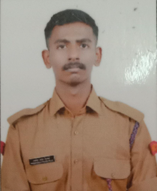Cdt.Pradhamesh Prasad Pillai received the Best Firer Award representing NCC FISAT UNIT in 22 Kerala Bn on 27th December 2023.
Camp Attended
Five NCC Cadets successfully attended CATC Camp from 21 Dec 2023 to 31 Dec 2023 at St Pauls College Kalamassery
Essay Writing Competition
‘Role of Millets for Sustainable Future’ essay writing competition was conducted by NCC FISAT Unit among college students on 15th Dec 2023. Winners 1st Lcpl. Ann Mary Benny, S4 EI 2nd Mr.Christo Thomas, s5 EEE 3rd Cdt.Anagha K P, s1 ECA
NCC DAY Celebrations
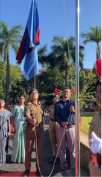FISAT Chairman Shimit P R started NCC Day celebration by NCC flag hoisting ceremony for the NCC DAY Celebration of 26th November 2023. The National Cadet Corps (NCC) is the largest voluntary youth organization of the world that provides military training to students. The NCC aims to develop character, discipline, leadership, and a sense of citizenship among the youth.